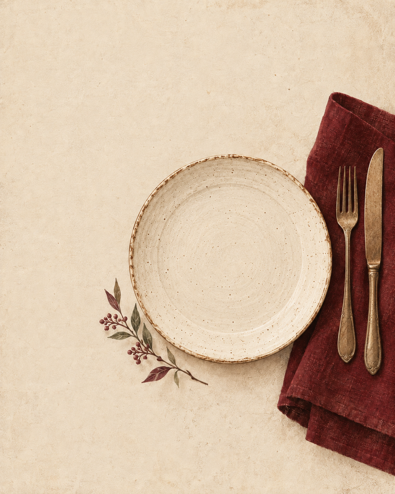

Comprendre un plat
Retrouver sa composition et les informations sur les allergènes renseignées par le restaurant.
COMPRENDRE AVANT DE CHOISIR
Un menu devrait ouvrir l’appétit, pas multiplier les questions.
Sediko développe une nouvelle façon de comprendre ce qu’il y a dans votre assiette, à partir des informations du restaurant.

01 / NOTRE VISION
Un ingrédient que vous évitez. Une allergie à signaler. Un accompagnement que vous souhaitez changer.
Au restaurant, ces questions font partie du repas. Nous construisons Sediko pour rendre les informations du menu plus accessibles et faciliter l’échange avec l’équipe en salle.
Notre point de départ : des informations documentées par le restaurant, des choix expliqués et des incertitudes clairement signalées.
02 / L’EXPÉRIENCE QUE NOUS CONSTRUISONS
Retrouver sa composition et les informations sur les allergènes renseignées par le restaurant.
Prendre en compte les variantes, accompagnements et options qui composent réellement votre repas.
Distinguer les informations disponibles de celles qui restent à confirmer avec l’équipe du restaurant.
En cas d’allergie, échangez toujours avec le restaurant, notamment sur la préparation et les risques de contamination croisée. Une information numérique ne remplace pas cet échange.
03 / POUR LES RESTAURATEURS
Vos menus et documents sont le point de départ.
Sediko vise à organiser ces informations pour les rendre lisibles, jusque dans les options et les formules. La démarche prévoit une revue humaine des données et un signalement des éléments à clarifier.
Vous souhaitez nous parler des besoins de votre établissement ou échanger autour du projet ? Rencontrons-nous.
Échanger avec l’équipeUNE QUESTION, UNE IDÉE, UNE RENCONTRE
Sediko est en cours de développement.
Pour suivre le projet ou envisager une collaboration, écrivez-nous.